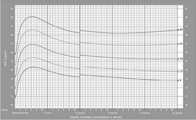
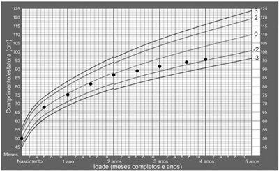
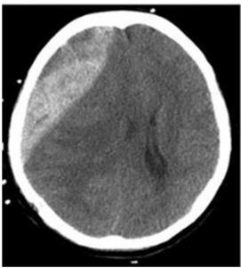
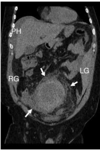
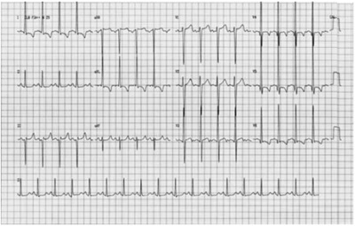

Questão 1 · Meningocócica C · 4000181754No segundo semestre de 2022, entre os meses de julho a setembro, a cidade de São Paulo registrou um surto de meningite. Com o intuito de prevenir o aumento de casos, o bloqueio vacinal realizado com a vacina contra Meningococo C deve ser aplicado nas regiões onde casos foram identificados em moradores e trabalhadores
A crianças não vacinadas e adultos até 64 anos.
B menores de 5 anos e maiores de 60 anos.
C entre 3 meses e 64 anos de vida.
D independente da idade e da situação vacinal.
Questão 2 · Gastroenterologia · 4000181753Mulher de 68 anos de idade, previamente hígida, que não toma nenhum remédio, procura a Unidade Básica de Saúde por queixa de antecedente relevante que refere é uma tendência a ressecamento. Mas nega sangramento nas fezes e queixas dispépticas. Ao exame clínico, está eutró ca, mas bastante descorada. Além de discreta taquicardia, não foi achada nenhuma outra alteração nem no exame físico geral nem específico. Foi feito exame de sangue que mostrou anemia hipocrômica e microcítica. Hemoglobina: 7,2 g/dL; hematócrito: 21%. O exame protoparasitológico de fezes teve a primeira amostra negativa. A melhor conduta para esta paciente, neste momento, dentre as abaixo, é:
A Solicitar colonoscopia.
B Reposição de ferro por via oral.
C Tratar parasitose empiricamente.
D Encaminhar para hematologista.
Revisar: possível letra faltando em enunciado
Questão 3 · Medicina Preventiva · 4000181752Foi realizado um estudo sobre a eficácia de uma vacina contra a Covid-19. Os resultados foram os seguintes: De acordo com os dados acima, a eficácia desta vacina contra Covid-19 a partir da segunda dose foi de:
A 62,5%
B 70%
C 45,5%
D 37,8%
Questão 4 · Fatores de Risco · 4000181751Senhora de 47 anos de idade, tabagista, obesa e etilista social, é atendida no ambulatório por dispepsia há vários anos. Já fez tratamento para erradicação de mas agora queixa-se de perda ponderal significativa no último mês. O fator de risco a que este tumor está mais comumente relacionado é
A etilismo.
B infecção por
C obesidade.
D tabagismo.
Questão 5 · Medicina Preventiva · 4000181750Considere o caso abaixo para responder à questão Uma queixa frequente de pacientes que tiveram Covid-19 é de uma alteração cognitiva leve, caracterizada principalmente por di culdade de lembrar nome de objetos e detalhes de conversas. Pretendendo investigar se existe uma relação entre Covid-19 e essa alteração tardia, um grupo de médicos de um hospital resolveu convocar os pacientes que procuram este serviço com suspeita de Covid-19 no último. Conseguiram contato com 2000 pacientes. Destes, 925 apresentaram testes positivos para Covid-19 e, entre estes, 75 referiram alguma alteração cognitiva. Entre os 1075 com teste negativo, 12 referiram alteração cognitiva. A partir dos achados descritos e considerando que estes foram estatisticamente significativos pode-se concluir que:
A pacientes sem Covid-19 apresentam 78,2% menor probabilidade de apresentarem a alteração cognitiva
B para cada paciente que desenvolva alteração cognitiva, existirão 6,25 que não a desenvolverão.
C pacientes com Covid-19 apresentam 7,26 vezes maior probabilidade de apresentarem a alteração cognitiva.
D a Covid-19 é responsável por 6,78% dos casos de alteração cognitiva na população.
Questão 6 · Medicina Preventiva · 4000181749Considere o caso abaixo para responder à questão Uma queixa frequente de pacientes que tiveram Covid-19 é de uma alteração cognitiva leve, caracterizada principalmente por di culdade de lembrar nome de objetos e detalhes de conversas. Pretendendo investigar se existe uma relação entre Covid-19 e essa alteração tardia, um grupo de médicos de um hospital resolveu convocar os pacientes que procuram este serviço com suspeita de Covid-19 no último. Conseguiram contato com 2000 pacientes. Destes, 925 apresentaram testes positivos para Covid-19 e, entre estes, 75 referiram alguma alteração cognitiva. Entre os 1075 com teste negativo, 12 referiram alteração cognitiva. O tipo de estudo descrito é:
A Coorte.
B Transversal.
C Ecológico.
D Caso-controle
Questão 7 · Psicof ármacos nas Emergências Psiquiátricas · Centro de Atenção Psicossocial CAPS · 4000181748Mulher de 30 anos apresenta crise de agitação intensa, nervosismo, choro e fala incoerente há 2 horas. Faz consultas com psicólogo por sintomas depressivos e ansiosos, há 2 meses. É levada à UBS por vizinha que a encontrou quebrando objetos dentro de casa e sabe que ela toma remédio para depressão. Paciente encontra-se agitada e ao entrar na sala de acolhimento começou a gritar e se arranhar e a falar de modo desconexo. Em relação à rede de atenção à saúde, entre as seguintes condutas, a melhor para essa paciente é
A aguardar familiares para obter anamnese qualificada.
B chamar o Serviço de Atendimento Móvel de Urgência (SAMU) para encaminhá-la ao pronto-socorro.
C entrar em contato urgente com psiquiatra matriciado da UBS.
D encaminhá-la ao Centro de Atenção Psicossocial (CAPS) junto com um responsável.
Questão 8 · Medicina Preventiva · 4000181747Adolescente de 15 anos, boa aluna, comparece à Unidade Básica de Saúde (UBS), com sua amiga de mesma idade, porque acha que está grávida. É recebida pelo pro ssional de saúde, que a considera com bom desenvolvimento psíquico, orientada e muito preocupada com o que pode acontecer, questionando o médico sobre como será sua vida caso esteja grávida. Entre as condutas seguintes, a mais adequada para este caso é:
A atendimento pela enfermeira, realizar o teste de gravidez e se positivo, convocar os pais.
B não atender, convocar os pais ou responsável legal e encaminhar para ginecologista.
C não atender e solicitar que retorne com um responsável para poder realizar os testes e iniciar o pré-natal.
D atendimento pelo Médico de Família da UBS e dependendo do teste de gravidez iniciar pré-natal.
Questão 9 · Pediatria · Diagnóstico Nutricional · 4000181746Menina de 3 anos e 6 meses de idade apresenta o índice de massa corpórea (IMC) para a idade de 19 kg/m² IMC por Idade MENINAS Do nascimento aos 5 anos (percentis) (WHO Child Growth Standards) De acordo com as informações fornecidas pelo gráfico, a indicação para manejo desse caso deve ser

A dieta e lipidograma.
B atividade física e ECG.
C dieta e atividade física.
D lipidograma e ECG.
Questão 10 · Transtornos Somáticos · Método Clínico Centrado na Pessoa · Psiquiatria · 4000181745Fábio, 19 anos, homem transgênero, negro, estudante cotista de administração em uma faculdade particular. Acompanhado pela mãe, vai à consulta em UBS com Médico de Família e Comunidade (MFC) por queixa de dor abdominal intensa em crises, há 6 meses. Procurou a emergência 3 vezes neste período e foi medicado com soro e analgésicos endovenosos com melhora parcial dos sintomas. Refere dor em pontada em regiões diferentes do abdome, acompanhadas de náuseas. Nega febre, vômitos, alterações urinárias. Realizou exames de sangue, ultrassom abdominal e exames de urina sem alterações. Está muito preocupado, com medo de ter alguma doença grave. Sente-se culpado porque sua mãe está preocupada e perde o sono por isso. Não tem histórico pessoal de doenças, seus pais são vivos e saudáveis e não tem irmãos. O médico de família investiga alimentação, hábitos, prática de exercícios físicos e percebe que desde que começou a faculdade, há 9 meses, parou de ter hábitos saudáveis, embora praticasse corrida e futebol antes. O paciente considera que deveria estar feliz na faculdade, que era um sonho realizado poder estudar, mas tem se sentido rejeitado pelos colegas e não sabe se vai conseguir continuar, refere tristeza maior parte do tempo. Exame físico normal. Entre os seguintes planos de tratamento e seguimento o melhor a ser oferecido pelo MFC é:
A Explicar ao paciente que seus sintomas são característicos de transtorno mental causado pelas alterações em sua vida. Prescrever antidepressivo e encaminhar o paciente para seguimento com o psiquiatra da UBS.
B Utilizar o método clínico centrado na pessoa para compreender os sentimentos relacionados ao sofrimento do paciente e prejuízo em suas funções. Prescrever analgésico. Seguir com equipe multiprofissional na UBS.
C Repetir os exames laboratoriais e solicitar novos exames de imagem caso aparecerem sinais de alerta com o objetivo de avaliar surgimento de lesões e para tranquilizar o paciente. Seguir com equipe multiprofissional na UBS.
D Explicar para o paciente e à sua mãe que a ausência de alterações no exame físico e nos exames suplementares indicam ausência de doenças físicas. Prescrever analgésicos e encaminhar para avaliação com psiquiatra.
Questão 11 · Obstetrícia · 4000181744Primigesta de 20 semanas de idade gestacional apresenta quadro de tosse e leve dor de garganta. Teste para Covid-19 positivo. Nesse caso, a melhor conduta entre as seguintes é:
A repouso relativo, uso de sintomáticos e observação de sinais de alerta.
B realização de cordocentese para investigação de contaminação fetal.
C introdução de imunoglobulina semanal por 8 semanas se temperatura ≥ 37,8 °C.
D adiar a ultrassonografia morfológica do segundo trimestre por 30 dias.
Questão 12 · Planejamento f amiliar · 4000181743Mulher, 22 anos de idade, sem comorbidades, iniciou vida sexual recente, vai a consulta com médica da saúde da família na UBS. Gostaria de método contraceptivo de menor risco tromboembólico. A melhor opção para essa paciente, dentre as abaixo, é:
A Medroxiprogesterona.
B Drospirenona.
C Etinilestradiol e levonorgestrel.
D Estradiol e nomegestrol.
Questão 13 · Diretrizes para o rastreamento · 4000181742Mulher, 43 anos de idade, com abstinência sexual há 15 anos e papanicolau sem alterações significativas há 2 anos, vai à consulta na UBS muito preocupada com risco de câncer de colo uterino pois sua vizinha foi diagnosticada recentemente com essa afecção. A orientação mais adequada é:
A Realizar colposcopia e vulvoscopia.
B Discutir a histerectomia profilática.
C Não há indicação de coleta cérvico-vaginal.
D Indicar a realização de teste DNA-HPV.
Questão 14 · Exames laboratoriais · Obstetrícia · 4000181741Gestante 7 semanas vai à primeira consulta de pré-natal. É hígida e refere ser doadora de sangue frequente. A última doação foi há 2 meses, sem intercorrências. Os exames de sorologia que devem ser solicitados são:
A Hepatite B, hepatite C e HIV.
B Não precisa solicitar sorologias pois é doadora frequente.
C Hepatite A, hepatite B e herpes.
D Hepatite A, hepatite C e Covid-19.
Questão 15 · Diagnóstico · Pediatria · Tratamento · 4000181740Criança de 3 anos foi levada à Unidade Básica de Saúde por apresentar tosse produtiva, redução de apetite e emagrecimento há um mês. Recebeu amoxicilina há 15 dias, sem melhora do quadro. A ausculta pulmonar estava normal. A prova tuberculínica solicitada foi de 6 mm, e a radiogra a de tórax apresentava adenomegalia hilar. A mãe referiu que avô foi internado com diagnóstico de tuberculose. Segundo a recomendação do Ministério da Saúde, entre as seguintes condutas, a melhor para essa criança é:
A Repetir a prova tuberculínica e a radiografia de tórax em 8 semanas.
B Tratar Infecção latente pelo Mycobacterium tuberculosis (ILTB) com Isoniazida.
C Tratar tuberculose com Isoniazida, Rifampicina e Pirazinamida.
D Solicitar escarro para pesquisa de BAAR em 4 semanas.
Questão 16 · Obstetrícia · Assistência ao parto normal · 4000181739Em uma maternidade de São Paulo, durante a passagem de plantão, dois colegas começam a discutir sobre uma paciente em trabalho de parto: primigesta, 40 semanas e 1 dia, na fase ativa, no segundo período do parto há 2 horas e 45 minutos, em imersão na banheira desde o último toque, com frequência cardíaca fetal: 144 bpm verificada a 25 minutos atrás juntamente com o início de oxitocina em bomba 24 mL/h. A argumentação correta do colega que está pegando o plantão é:
A não existia indicação para iniciar a oxitocina em bomba.
B a avaliação da frequência cardíaca fetal deveria ter sido verificada a cada 15 minutos.
C o segundo período está prolongado para uma primigesta sem analgesia.
D a paciente pode ficar na banheira e está indicada a ultimação do parto em imersão.
Questão 17 · Distúrbios hipertensivos na gestação DHEG · Obstetrícia · 4000181738Primigesta, 31 anos de idade, gestante no 3º trimestre (36 semanas), realizando consultas de pré-natal a cada 3 meses, apresenta-se assintomática na consulta atual. Observou-se, na primeira consulta, PA: 120 × 80 mmHg. Na consulta do 2º trimestre a medida foi de 120 × 70 mmHg e na consulta atual 120 × 90 mmHg. Refere ter buscado pronto-socorro há 1 semana por cefaleia e a pressão aferida foi de 140 × 90 mmHg quando realizou exames com resultados normais e a pressão normalizou com repouso. A conduta mais adequada é:
A Indução de parto, imediato com misoprostol.
B Prescrever metildopa e realizar controle pressórico.
C Aguardar 37 semanas e realizar parto cesáreo eletivo.
D Prescrever hidralazina e realizar controle pressórico.
Questão 18 · Rotura prematura de membranas ovulares RPM · Obstetrícia · 4000181737Primigesta, 25 anos de idade, 33 semanas de gestação, refere perda de líquido em grande quantidade há 2 horas. Nega dores abdominais, nega comorbidades. Realizou pré-natal adequado. Entre as seguintes condutas, a mais adequada é:
A Realizar neuroproteção fetal e realizar parto cesáreo.
B Colher cultura de secreção vaginal e indução de parto com misoprostol.
C Realizar neuroproteção com sulfato de magnésio e aguardar parto espontâneo.
D Antibioticoterapia com ampicilina e azitromicina para prolongar o tempo de latência
Questão 19 · Cistite · Nef rologia · 4000181736Mulher de 56 anos dá entrada no PS da Ginecologia com disúria e polaciúria há 1 dia, nega febre e relata início de relacionamento com novo parceiro. Refere ter pesquisado no Google sobre seus sinais e sintomas e pede que o médico de plantão solicite exames de urina, urocultura, ultrassom de rins e vias urinárias e ressonância nuclear magnética de abdome e pelve. Nesse caso,
A há necessidade de ultrassonografia de vias urinárias superiores, por ser caso de cistite que ocorre acima dos 50 anos.
B a ressonância nuclear magnética é exame preferencial para a exclusão de pielonefrite.
C não existe a necessidade de exames subsidiários para o diagnóstico de cistite aguda não complicada.
D os exames de urina e urocultura são necessários para nortear a antibioticoterapia em mulheres sexualmente ativas.
Questão 20 · Síndrome dos ovários policísticos · 4000181735Mulher, 21 anos de idade, refere ciclos menstruais a cada 90 dias, com duração de 5 dias. Nega dismenorreia. Refere uso de preservativo nas relações sexuais. Exame físico: bom estado geral, IMC: 28 kg/m², apresenta acne no rosto e manchas arroxeadas na axila e virilha. Entre os diagnósticos abaixo, o mais provável é:
A síndrome de Cushing associada a síndrome dos ovários policísticos.
B deficiência da 21-hidroxilase associada a síndrome dos ovários policísticos.
C hipotiroidismo secundário a síndrome dos ovários policísticos.
D síndrome dos ovários policísticos com resistência insulínica aumentada.
Questão 21 · Ginecologia · Terapia hormonal · 4000181734Mulher, 53 anos de idade, refere ondas de calor (8 episódios/dia), sudorese e rubor facial há 8 meses. Refere hipercolesterolemia e que a mãe teve câncer uterino aos 50 anos de idade. Última menstruação há 1 ano. Nuligesta. Nega cirurgias prévias. Nega tabagismo. A conduta mais adequada entre as abaixo é:
A Estrogenioterapia vaginal.
B Terapia hormonal combinada transdérmica.
C Inserção de DIU hormonal.
D Fito-hormonioterapia com ácido gama-linolênico.
Questão 22 · Ginecologia · Tratamento · 4000181733Mulher, 80 anos de idade, refere urgência e urge-incontinência há 6 meses. É hipertensa e diabética controlada com medicações. Refere noctúria 3 vezes por noite. Nega cirurgias. Nega tabagismo. A conduta mais adequada, dentre as abaixo, é:
A Prescrição de trospium ou mirabegrona.
B Neuromodulação vesical.
C Injeção intravesical de toxina botulínica.
D Prescrição de tolterodine ou oxibutinina.
Questão 23 · Interpretação e conduta f rente as atipias citológicas · 4000181732Após 6 meses de um resultado de citologia oncótica de colo uterino com resultado de atipia de células escamosas, provavelmente não neoplásicas (ASC-US), uma paciente de 34 anos repete o exame e apresenta o resultado: lesão intraepitelial de baixo grau (LIEBG). De acordo com as Diretrizes para o Rastreamento do Câncer do Colo do Útero, o próximo passo para o tratamento adequado é:
A Nova coleta de citologia oncótica em 12 meses.
B Realizar teste de DNA-HPV.
C Nova coleta de citologia oncótica em 6 meses.
D Encaminhar paciente à colposcopia.
Questão 24 · Diabetes na gestação DMG · Obstetrícia · 4000181731Primigesta, 24 semanas, procura maternidade com disúria e polaciúria há 3 dias. Nega outras queixas. Médico que a atende verifica o cartão de pré-natal e identi ca uma glicemia de jejum realizada com 10 semanas de 91 mg/dL e um teste de tolerância oral a glicose (TTOG) 75 g realizado com 21 semanas de 94 mg/dL (jejum)/140 mg/dL (pós 1 hora)/104 mg/dL (pós 2 horas). Nesse caso,
A a paciente realizou corretamente a glicemia de jejum na primeira consulta de pré-natal, pois deve-se avaliar gestantes sem diagnóstico prévio com objetivo de detectar
B a paciente não realizou hemoglobina glicada, apesar de ser o principal exame laboratorial para diagnóstico de diabetes mellitus gestacional e pode ser realizado em qualquer momento da gestação.
C o TTOG 75 g realizado está normal e indicação adequada, pois recomenda-se a realização do mesmo para investigação de
D a paciente não tem diagnóstico de diabetes mellitus gestacional, pois o diagnóstico, feito por glicemia de jejum tem como valor positivo acima de 126 mg/dL, sendo que pode ser feito em qualquer idade gestacional.
Revisar: possível letra faltando em enunciado
Questão 25 · Obstetrícia · Acretismo placentário · 4000181730Gestante, 34 anos de idade, 37 semanas e 4 dias, 4G2Pc1A, chega no PS com polo cefálico coroando. O parto é ultimado, sem intercorrências. O recém-nascido nasce vigoroso e vai ao colo da mãe. Após 2 minutos do nascimento, a paciente apresenta sangramento vaginal abundante e queda do estado geral, com índice de choque de 0,9. Nota-se que houve dequitação parcial espontânea placentária. O útero está fortemente contraído na cicatriz umbilical e não existem lacerações de trajeto. Ao tentar terminar a dequitação da placenta, percebe-se que não há desprendimento placentário e solicita-se transferência à sala cirúrgica. Entre as opções abaixo, a conduta ideal para esta paciente deverá ser laparotomia exploradora de emergência e
A histerectomia puerperal.
B retirada da placenta com posterior histerorrafia.
C tentativa de reparo do local de lesão.
D histerectomia puerperal com placenta in loco.
Questão 26 · Obstetrícia · Gestação ectópica · 4000181729Mulher, 26 anos de idade, pro ssional do sexo, dá entrada em pronto-socorro com dor tipo cólica suprapúbica de moderada intensidade e sangramento genital discreto. DUM: há 6 semanas. Uso irregular de preservativo. 2G1P normal 1A provocado. Refere ISTs prévias com tratamentos adequados. Faz uso de PREP devido a exposição de risco. Ao exame: bom estado geral, hidratada, FR: 20 irpm, FC: 98 bpm, PA: 90 × 50 mmHg. Abdome doloroso à palpação, sinal de La ont positivo. Especular: pequena quantidade de sangramento acastanhado coletado em fundo vaginal. Toque vaginal: colo grosso, posterior, impérvio amolecido, doloroso. O diagnóstico mais provável, dentre as opções abaixo, é:
A abortamento em curso.
B prenhez ectópica rota.
C sangramento por implantação.
D ameaça de aborto.
Questão 27 · Vulvovaginites · Ginecologia · 4000181728Mulher, 28 anos de idade, assintomática, refere relacionamento com novo parceiro há 1 mês. Realizado exame físico ginecológico com identificação de corrimento vaginal. A orientação que o médico deve dar à paciente em caso de
A vaginose bacteriana: será realizado o tratamento, mesmo que assintomático.
B detecção de protozoários na microscopia: está indicado a coleta do protoparasitológico de fezes.
C tricomoníase: não é necessário o tratamento do parceiro, pois não é mais considerada IST.
D vulvovaginite fúngica: só será considerada recidivante caso ocorra mais 3 episódios no próximo ano.
Questão 28 · Quadro clínico · Exames complementares · 4000181727Mulher, 32 anos de idade, vai em consulta ginecológica devido a dismenorreia progressiva desde a menarca e dispareunia. Ao exame físico nota-se espessamento do septo retovaginal. A paciente trouxe uma ultrassonogra a transvaginal que caracterizava presença de cisto com conteúdo hemático no ovário direito, medindo 30 mm de diâmetro. O próximo passo propedêutico é:
A Punção do cisto ovariano para confirmação diagnóstica.
B Solicitar colonoscopia para investigação de lesão intestinal.
C Ressonância magnética de pelve para diagnóstico de outros focos de endometriose profunda.
D Tomografia computadorizada para excluir possível malignidade no cisto.
Questão 29 · Tratamento cirúrgico · 4000181726Mulher, 62 anos de idade, hipertensa, obesa e diabética refere queixa de sangramento vaginal há 3 meses. Sem alterações no exame físico. No ultrassom transvaginal identi cou-se espessamento endometrial (8 mm). Realizada histeroscopia e biópsia do endométrio com resultado anatomopatológico de adenocarcinoma endometrioide do endométrio G1. Pela ressonância magnética, o tumor invade menos que a metade do miométrio. A conduta mais adequada a ser tomada é realizar histerectomia total com
A salpingooforectomia bilateral e coleta do lavado peritoneal.
B salpingooforectomia bilateral, linfadenectomia pélvica bilateral e coleta do lavado peritoneal.
C salpingectomia bilateral e coleta do lavado peritoneal.
D salpingectomia bilateral e linfadenectomia pélvica bilateral e coleta do lavado peritoneal.
Questão 30 · Tratamento · 4000181725Mulher, 35 anos de idade, com sangramento uterino anormal há 1 ano, secundigesta secundípara, tendo realizado laqueadura tubária há 8 anos. Durante a investigação foram encontrados 3 leiomiomas uterinos submucosos com componente intramural. Realizou tratamento clínico sem sucesso com manutenção do sangramento. Entre as seguintes propostas terapêuticas, a mais adequada é:
A Miomectomia laparoscópica.
B Histerectomia laparoscópica.
C Miomectomia histeroscópica.
D Embolização de artérias uterinas.
Questão 31 · Bronquiolite · Pediatria · 4000181724Lactente de 10 meses de idade, com quadro de bronquiolite há 4 dias, apresentou piora da febre e há 2 dias necessitou de intubação. Radiogra a de tórax evidenciou opacidade em base de hemitórax esquerdo, realizado o diagnóstico de pneumonia e introduzido antibioticoterapia. Puncionado acesso venoso central em veia subclávia esquerda. Hoje pela manhã, apresentou piora do padrão respiratório, com queda da saturação do oxigênio ao oxímetro para 85% e capnogra a normal. Encontra-se corada, hidratada, febril. Cânula orotraqueal 4,0 com cu , xada em 16 cm no lábio superior com vapor exalado evidente. BRNF sem sopros com FC: 138 bpm. Expansibilidade torácica reduzida em hemitórax esquerdo. Percussão torácica com som claro pulmonar à direita e maciço à esquerda. Murmúrio vesicular presente à direita com sibilos e expiração prolongada; murmúrio vesicular abolido à esquerda. Abdome globoso, ácido, sem visceromegalias. Perfusão periférica 1,5 segundos. Pulsos presentes normais. A causa de descompensação ventilatória mais provável para este caso, dentre as abaixo, é
A derrame pleural.
B rolha na cânula traqueal.
C intubação seletiva.
D pneumotórax.
Questão 32 · Orientações gerais de puericultura Sinais de alerta · 4000181723MCS, sexo masculino, seis anos, apresenta história de dor abdominal há quatro meses. A dor ocorre uma vez por semana, na região periumbilical com irradiação para epigástrio, durando de minutos até algumas horas. Mãe refere que a dor não se relaciona com alimentação, cedendo espontaneamente na maioria das vezes. Entretanto, a criança geralmente para com as suas atividades habituais durante os períodos de dor. Apresentou cólicas aos três meses de vida, que sumiram espontaneamente. Nega febre, perda de peso, alterações do hábito intestinal. Exame físico: criança eutró ca, sem alterações. A hipótese diagnóstica mais provável, dentre as abaixo, é
A doença celíaca.
B intolerância a lactose.
C parasitose.
D dor abdominal funcional.
Revisar: possível letra faltando em enunciado
Questão 33 · Tuberculose Latente · Pediatria · 4000181722Criança de 7 anos de idade é levada a serviço de saúde porque mãe teve diagnóstico de tuberculose pulmonar bacilífera. Está assintomática e radiogra a de tórax é normal, tem carteira vacinal atualizada. Prova tuberculínica de 7 mm. Entre as opções abaixo, a conduta mais apropriada para este paciente é
A colher escarro induzido.
B repetir radiografia de tórax em três meses.
C tratar infecção latente pelo
D tratar tuberculose ativa.
Questão 34 · Quadro clínico da anemia f alcif orme · Pediatria · 4000181721Felipe, dois anos, é levado para atendimento médico devido a um quadro súbito da palidez, irritabilidade e dor abdominal. Há três dias apresenta quadro de tosse e coriza. Hoje pela manhã apresentou febre de 38 °C, fazendo uso de dipirona pela primeira vez. Exame físico: regular estado geral, mas brinca com o médico, afebril, palidez importante, baço palpável a 4 cm do rebordo costal esquerdo, fígado palpável a 1 cm do rebordo costal direito, PA: 100 mmHg × 60 mmHg e FC: 140 bpm. Mãe trouxe hemograma demonstrando anemia normocítica normocrômica, reticulocitose, plaquetopenia e leucocitose. O esfregaço de sangue periférico evidenciou células em alvo, dacriócitos, eritroblastos, esquisócitos, corpos de Howell-Jolly e pontilhados basófilos. Entre as seguintes hipóteses diagnósticas para este paciente, a mais provável é:
A Leucemia Linfoide Aguda.
B Anemia Falciforme.
C Deficiência de G6PD.
D Anemia Hemolítica Autoimune.
Questão 35 · Reumatologia · Quadro clínico · 4000181720GP, sexo feminino, dez anos, foi à consulta acompanhada por sua mãe, com história de dores articulares em joelhos e tornozelos, além de febre de 37,8 °C. O quadro evoluiu com movimentos involuntários em membros superiores, perda de coordenação motora, irritabilidade e fala empastada. Exame físico: úlceras orais, alopecia, vasculite em palma das mãos e artrite em joelhos e tornozelos e sopro sistólico suave ++/+6 e pancardíaco. Exames realizados mostraram anemia, leucopenia, hematúria microscópica, teste de Coombs direto positivo e ASLO (antiestreptolisina O): 250 UI/mL. Entre os seguintes diagnósticos, o mais provável para essa paciente é:
A lúpus eritematoso sistêmico juvenil.
B artrite idiopática juvenil.
C doença de Behçet.
D febre reumática.
Questão 36 · Miocardite · Insuf iciência cardíaca pediátrica · Pediatria · 4000181719Lactente 4 meses de idade, previamente hígido, há 1 semana apresentou quadro de coriza, tosse e febre baixa. Hoje com di culdade para mamar, fazendo pausas, parecendo cansado. Ao exame físico, REG, agitado, palidez leve, hidratado, anictérico, acianótico, T: 36 °C. FR: 60 ipm, SatO2: 93% em ar ambiente. Ausculta cardíaca com bulhas rítmicas normofonéticas em 2 tempos sem sopros. FC: 162 bpm, PA: 90 × 40 mmHg, pulsos periféricos nos, tempo de enchimento capilar de 3 segundos; ausculta pulmonar com estertores em ambas as bases, tiragem subdiafragmática leve. Abdome globoso, ácido, indolor, fígado 4 cm RCD, baço não palpável. A hipótese diagnóstica mais provável para este paciente, dentre as seguintes, é:
A bronquiolite.
B pneumonia.
C choque séptico.
D miocardite.
Questão 37 · Recepção do neonato com boa vitalidade · 4000181718Neonato de 40 semanas nasceu de parto cesáreo por alteração na cardiotocogra a e líquido amniótico meconial bem espesso. Apresenta choro forte, tônus muscular em exão e boa vitalidade. Dentre as seguintes condutas, a melhor neste caso é
A realização dos passos iniciais na mesa de reanimação com aspiração de vias aéreas superiores.
B laringoscopia sob visualização direta imediata seguida de aspiração traqueal.
C aspiração das vias aéreas no momento do desprendimento do polo cefálico.
D clampeamento tardio do cordão umbilical e oferecer os primeiros cuidados junto à mãe.
Questão 38 · Pediatria · Marcos Importantes · 4000181717Uma criança do sexo masculino, com 11 meses de idade, é avaliada quanto ao seu desenvolvimento em consulta de rotina. A mãe pergunta ao pediatra se a criança está com o desenvolvimento adequado. Considerando que a criança já atingiu os marcos do desenvolvimento esperados em idades anteriores, neste momento, para que esta criança seja considerada como tendo seu desenvolvimento normal, espera-se que ela
A mostre o que quer; empilhe três blocos e ande sem apoio.
B imite gestos; coloque blocos na caneca e fique parada em um pé só.
C imite gestos; faça pinça e ande com apoio.
D mostre o que quer; coloque blocos na caneca e ande sem apoio.
Questão 39 · Avaliação do Crescimento · Pediatria · 4000181716A mãe de um menino de 4 anos de idade, leva-o à consulta, porque acha que ele é muito baixo. O paciente nasceu a termo, com peso de 3.200 g e comprimento de 49 cm. Foi amamentado até os 9 meses de idade e sempre comeu pouco. A mãe refere que é uma criança hígida, sem patologias graves ou internações anteriores. É esperto, tem bom desenvolvimento neuropsicomotor para a idade e gosta de brincadeiras como pega-pega e esconde-esconde. A mãe refere que apresentou a menarca aos 12 anos de idade e mede 1,58 m; o pai entrou em puberdade na mesma época que os amigos, e mede 1,73 m. Recuperando as medidas anteriores, anotadas na caderneta da criança, observa-se que a criança mantém uma curva de IMC adequada para idade, enquanto o comprimento/estatura para a idade apresenta o seguinte gráfico. Comprimento/estatura por idade MENINOS Do nascimento aos 5 anos (escores-Z) (WHO Child Growth Standards) Entre as condutas apresentadas, a melhor neste caso é:

A Manter o paciente em observação, com retornos mensais para acompanhar o crescimento.
B Iniciar a investigação para déficit de crescimento, com o cálculo da velocidade de crescimento e a idade óssea.
C Aguardar até a puberdade, sendo a principal hipótese, o atraso constitucional do crescimento.
D Tranquilizar a família, uma vez que o diagnóstico mais provável é atraso constitucional do crescimento.
Questão 40 · Citomegalovírus · 4000181715Primigesta, 15 anos, com pré-natal tardio, dá à luz um recém-nascido com 38 semanas e peso de 1.894 g. Ao exame na sala de parto observou-se hepatoesplenomegalia, petéquias e púrpuras por todo corpo. A criança evoluiu com icterícia precoce e o ultrassom transfontanela indicou calci cações periventriculares. Entre as seguintes hipóteses diagnósticas, a mais provável para este recém-nascido é
A infecção pelo vírus Zika.
B infecção pelo citomegalovírus.
C toxoplasmose congênita.
D sífilis congênita.
Questão 41 · Seguimento ambulatorial · 4000181714Lactente do sexo masculino de 3 meses de idade chega para consulta de rotina na Unidade Básica de Saúde. A mãe realizou prénatal adequado, sendo diagnosticada com sí lis primária no 6o mês de gestação; foi medicada com benzilpenicilina benzatina 2,4 milhões UI, intramuscular, dose única. A criança nasceu a termo, de parto vaginal, com peso de 3.050 g, comprimento de 50 cm e exame clínico normal. Na maternidade, o VDRL materno foi de 1:4 e do recém-nascido foi de 1:2. Hemograma, TGO, TGP, radiogra a de ossos longos e torácica e análise liquórica da criança não apresentaram alterações. Recebeu alta hospitalar sem nenhum tratamento medicamentoso dirigido à sí lis. Na consulta ambulatorial realizada no 1o mês de vida, foi solicitado VDRL cujo resultado foi de 1:1. De acordo com o Protocolo Clínico para Sí lis Congênita do Ministério da Saúde, nesta consulta, o médico deverá
A encerrar seguimento laboratorial.
B solicitar exame de VDRL.
C prescrever penicilina benzatina.
D pedir Teste Treponêmico.
Questão 42 · Plano B · 4000181713Lactente do sexo feminino de 12 meses de idade, previamente hígida, chega à Unidade Básica de Saúde com quadro de febre e diarreia há um dia. Apresentou oito episódios de eliminação de fezes líquidas em grande quantidade, sem sangue ou muco. Ao exame clínico, apresenta-se em regular estado geral, alerta, choro sem lágrima, boca e língua secas, pulsos cheios, enchimento capilar de 2 segundos e Sinal da Prega desaparecendo rapidamente. Seu peso atual é de 10 kg. Segundo as orientações do Ministério da Saúde, neste momento, dentre as condutas propostas, a mais adequada para a reidratação da criança deve ser administração de:
A 500 a 1.000 mL de solução de reidratação oral no período de 4 a 6 horas.
B 100 a 200 mL de solução de reidratação oral após cada evacuação, no domicílio.
C 200 mL de Soro Fisiológico 0,9% endovenoso durante 30 minutos.
D 100 a 200 mL de solução de reidratação oral no período de 2 horas.
Questão 43 · Pediatria · Investigação por imagem · 4000181712Menina de sete meses de idade apresenta infecção urinária acompanhada de febre com queda do estado geral. A bactéria isolada foi E.coli sensível a todos os antimicrobianos testados, tratada inicialmente com ceftriaxona e posteriormente com cefalexina, com boa resposta clínica e laboratorial. Entre as condutas seguintes, a melhor para este caso é
A realizar cintilografia renal.
B coletar urocultura trimestralmente por um ano.
C realizar ultrassonografia de vias urinárias.
D prescrever antibioticoprofilaxia por um ano.
Questão 44 · Quadro clínico da síndrome hemolítico urêmica SHU · 4000181711Menina de 3 anos de idade é atendida no setor de emergência com quadro de hematúria aguda, sendo relatado pela mãe que a criança apresentou dor abdominal e diarreia sanguinolenta há 6 dias. A criança evoluiu com anemia hemolítica microangiopática e lesão renal aguda, sem sinais meníngeos ou alterações pulmonares. Dentre os seguintes achados laboratoriais, os mais prováveis de serem encontrados são:
A desidrogenase láctica aumentada e plaquetas normais.
B presença de esquizócitos e reticulócitos normais.
C Coombs direto positivo e bilirrubina indireta aumentada.
D Coombs direto negativo e plaquetas diminuídas.
Questão 45 · Apresentação Clínica · 4000181710Na consulta de rotina de um lactente de 40 dias de vida, o médico nota que a criança apresenta estridor inspiratório ao choro. A mãe realizou adequadamente o seguimento pré-natal e não apresentou intercorrências relevantes. Nasceu a termo, de parto vaginal, Boletim de Apgar 9-10, pesando 3.100 g e medindo 51 cm; evoluiu sem intercorrências e recebeu alta da maternidade no 2o dia de vida. Atualmente está em aleitamento materno exclusivo, com peso atual de 4.100 g; não apresenta queixas e o restante do exame clínico está normal. Dentre as hipóteses diagnósticas seguintes, a mais provável neste caso é
A estenose subglótica.
B laringomalácia.
C paralisia de corda vocal.
D hemangioma subglótico.
Questão 46 · Cirurgia · Obstrução Intestinal Mecânica · 4000181709Um homem de 35 anos de idade, com antecedente de hérnia incisional há 2 anos, decorrente de laparotomia mediana por ferimento de arma branca, vai ao pronto-socorro com queixa de um dia de dor abdominal, náuseas, vômitos e abaulamento irredutível no local da incisão abdominal. O abdome está distendido e é difusamente doloroso. Os ruídos hidroaéreos estão aumentados e têm timbre alterado. Não tem sinais de peritonite. A área da hérnia está hiperemiada. Entre as opções abaixo, a melhor conduta para este paciente, além de jejum, hidratação venosa e sonda gástrica aberta deve ser:
A Tratamento inicial com antibioticoterapia e observação.
B Cirurgia de urgência, corrigindo a hérnia com tela absorvível.
C Cirurgia de urgência, corrigindo a hérnia com tela de polipropileno.
D Redução manual da hérnia e observação.
Questão 47 · Hérnias Inguinocrurais · Cirurgia · 4000181708Homem de 68 anos de idade tem hérnia inguinoescrotal volumosa, cronicamente encarcerada, há 5 anos. É hipertenso, diabético e dislipidêmico. IMC: 30 kg/m². Já fez prostactectomia radical, por adenocarcinoma de próstata. Foi feita a correção da hérnia, com sucesso. Recomendação para o pós-operatório deste paciente:
A Repouso absoluto no leito nas primeiras 24 horas.
B Não levantar mais do que 10 kg nos primeiros 30 dias.
C Repouso relativo por 60 dias.
D Não utilizar suspensório escrotal nos dois primeiros dias.
Questão 48 · Quadro Clínico e Indicações de Tomograf ia de Crânio · Neurologia · Hematoma Subdural · 4000181707Homem de 35 anos de idade, vítima de colisão moto × auto, chega ao pronto-socorro imobilizado em prancha rígida, com colar cervical. Dados no local: FC: 95 bpm, PA: 150 × 80 mmHg, Glasgow 14. Intervalo de tempo até ao hospital: cerca de uma hora. Na chegada, a via aérea está pérvia e o colar cervical bem ajustado. SatO2: 94%. A expansibilidade torácica é normal bilateralmente e o murmúrio vesicular presente e simétrico. Frequência cardíaca: 92 bpm, PA: 170 × 90 mmHg. O abdome é ácido e indolor. A pelve é estável. Toque retal: sem alterações. Glasgow: 8; pupilas: fotorreagentes, sendo a pupila direita maior que a esquerda. O paciente foi intubado e fez a tomografia de crânio ilustrada abaixo.

A tratar com hipotensão permissiva, para diminuir o risco de expansão do hematoma cerebral.
B evitar hipercapnia, por seu efeito de vasodilatação cerebral.
C fazer trepanação, após tomografia de corpo inteiro.
D manter em decúbito dorsal horizontal, para melhorar a perfusão cerebral.
Questão 49 · Dermatologia · Tratamento e conduta · 4000181706Uma mulher de 54 anos de idade é encaminhada pela dermatologista, após biópsia excisional de lesão cutânea enegrecida de cerca de 2,2 cm de extensão em face anterior do braço direito. A análise histológica revelou melanoma nodular de 2,8 mm de profundidade, com ulceração. Após o estadiamento adequado, a melhor conduta, entre as seguintes, é:
A Ampliação de margens em 2 cm, com pesquisa de linfonodo sentinela.
B Ampliação de margens em 0,5 cm, com pesquisa de linfonodo sentinela.
C Seguimento clínico, com nova avaliação em 4 meses.
D Ampliação de margens em 2 cm.
Questão 50 · Anticoagulantes antagonistas da vitamina K · 4000181705Senhora de 83 anos de idade, com brilação atrial crônica, vai ao pronto-socorro queixando-se de dor abdominal há 3 dias. Acha que a dor vem piorando. Diz fazer uso de warfarina, carvedilol e enalapril. Está descorada, normotensa e normocárdica. O exame cardiorrespiratório não revela alterações significativas. O abdome é doloroso à palpação no hipogástrico, onde se nota área endurecida. O toque retal é normal. Fez a tomogra a de abdome ilustrada a seguir, sem contraste, por causa de função renal alterada. O exame que, se estiver claramente alterado, confirma a principal hipótese diagnóstica é:

A INR.
B PCR.
C DHL.
D Amilase
Questão 51 · Cirurgia · Íleo Biliar · 4000181704Senhora de 78 anos de idade vai ao pronto-socorro com dor abdominal há 3 dias. Antecedentes: diabetes e revascularização do miocárdio. Tem história de crises de dor epigástrica em cólica e de febre. Está desidratada e taquicárdica. A pressão arterial é normal. O abdome está distendido, com ruídos hidroaéreos aumentados. Não tem nenhuma cicatriz de cirurgia abdominal. No toque retal, tem fezes na ampola. Fez a radiografia de abdome ilustrada a seguir Entre as opções diagnósticas seguintes, a mais provável para este paciente é

A apendicite aguda.
B litíase intravesical.
C inconclusiva, requer tomografia de abdome total.
D íleo biliar
Questão 52 · Cirurgia · Tratamento Cirúrgico · 4000181703Homem de 48 anos de idade é acompanhado por dor em cólica há cerca de 3 anos. A dor é referida em região epigástrica e ocorre quase sempre após as refeições. Raramente tem náuseas associadas. Nega febre, icterícia, colúria, acolia fecal ou perda de peso. Não tem comorbidades. Refere etilismo social. Nunca foi operado antes. Está em preparo para colecistectomia videolaparoscópica eletiva, por litíase biliar. O único achado relevante na avaliação pré-operatória deste paciente é o aumento de gama-GT e de fosfatase alcalina. Gama-GT: 990 mg/dL, fosfatase alcalina: 294 mg/dL. Entre as opções abaixo, o melhor tratamento, deste paciente deve incluir
A tomografia de abdome antes da operação.
B ecoendoscopia ou colangiorressonância de abdome total, antes da operação.
C colangiografia endoscópica antes da colecistectomia.
D exploração radiológica das vias biliares no intraoperatório.
Questão 53 · Cirurgia · Agentes Anestésicos · 4000181702Um paciente de 49 anos está em sala operatória para ser operado por abdome agudo obstrutivo, secundário a neoplasia de cólon sigmoide. Comorbidades: obesidade, esteatose hepática e dislipidemia. Pulso: 98 bpm, PA: 120 × 70 mmHg, saturação de oxigênio: 97%, em ar ambiente. Foi internado com disfunção renal aguda, parcialmente revertida com hidratação. Creatinina: 1,5 mg/dL, K+ : 4,3 mEq/L, hemoglobina: 11 g/dL. Para intubação orotraqueal para a cirurgia, considerando a escolha de utilizar a intubação de sequência rápida:
A Recomenda-se pré-oxigenação adequada.
B Está contraindicado o uso de bloqueador neuromuscular.
C A principal medida de preparação é a pré-ventilação com bolsa-valva-máscara (ambu).
D A manobra de Sellick deve ser evitada.
Questão 54 · Choque · Cirurgia · 4000181701Homem de 31 anos foi vítima de queda de 5 m de altura. Dados no local: FC: 133 bpm, PA: 80 × 60 mmHg, Glasgow: 15. Atendido pelo Serviço de Resgate, chega ao pronto-socorro depois de uma hora, imobilizado com colar cervical e prancha rígida. A via aérea está pérvia. SatO2, com máscara de 12 L/min: 92%. A expansibilidade torácica é normal e o murmúrio vesicular simétrico. FC: 142 bpm, PA: 70 × 50 mmHg. O abdome é ácido, mas doloroso em hipogástrio. Na pelve, a sín se púbica tem disjunção acentuada e nota-se instabilidade. O toque retal não tem alterações. Continua com Glasgow 15 e pupilas isocóricas e fotorreagentes. Tem lesão extensa de partes moles em região perineal. O e-FAST (extended focused assessment with sonography for trauma) é positivo em janela hepatorrenal. Além de solução cristaloide, a reanimação hemodinâmica deste paciente deve incluir necessariamente
A transfusão maciça e hipotensão permissiva.
B ácido tranexâmico, hipotensão permissiva e plasma fresco.
C ácido tranexâmico, transfusão maciça e hipotensão permissiva.
D ácido tranexâmico e transfusão maciça.
Questão 55 · Abscesso Cervical · Cirurgia · 4000181700Homem de 54 anos procura o pronto-socorro por dor no pescoço há 6 dias, associada a febre diária e prostração. Tem antecedentes de etilismo, 1/2 garrafa de destilado por dia, e de tabagismo, 1 maço/dia há muitos anos. Nega outras morbidades. Ao exame físico, nota-se abaulamento em zona II do pescoço, à direita, com aumento de temperatura, hiperemia e muita dor à palpação. A tomogra a evidencia coleção de cerca de 50 mL de líquido espesso em região medial ao músculo esternocleidomastoideo, anteriormente aos vasos cervicais; tem en sema de subcutâneo associado. Pulso: 110 bpm, PA: 110 × 80 mmHg. Além de precisar ser internado e receber antibioticoterapia intravenosa, este paciente deve ser tratado com drenagem
A e desbridamento amplo em centro cirúrgico, por cervicotomia direita; na sequência, fazer mediastinoscopia.
B e desbridamento amplo em centro cirúrgico, por cervicotomia direita e avaliação odontológica.
C guiada por método de imagem (radiologia intervencionista), seguida por mediastinoscopia.
D imediata, aberta, à beira do leito, com revisão posterior em centro cirúrgico.
Questão 56 · Manejo Clínico · Quadro Clínico e Indicações de Tomograf ia de Crânio · Neurologia · 4000181699Um paciente de 58 anos de idade sofreu queda de aproximadamente 6 metros. Atendido na cena, ele consegue falar seu nome, tem pulso de 115 bpm, regular, pressão arterial de 100x60 mmHg e saturação de oxigênio de 88%. Duas horas após a queda, chega ao pronto-socorro com respiração ruidosa, frequência cardíaca de 120 bpm, pressão arterial de 100x70 mmHg e Glasgow 6. Está anisocórico, sendo a pupila direita maior que a esquerda. A respeito desse traumatizado, é correto afirmar:
A Provavelmente, trata-se de hematoma epidural, com o quadro clínico clássico de intervalo lúcido.
B O tratamento desse paciente precisa ser passado imediatamente para a equipe de neurocirurgia.
C A frequência cardíaca alterada é, provavelmente, secundária à lesão cerebral traumática grave.
D A anisocoria com pupila maior à direita sugere lesão com efeito de massa localizada do lado esquerdo do cérebro.
Questão 57 · Cirurgia · Colecistite Aguda · 4000181698Homem de 63 anos de idade, portador de hipertensão arterial e de diabetes com bom controle, procura o pronto-socorro com queixa de dor em quadrante superior direito do abdome, com início há 3 dias, associada a náuseas. Ao exame físico, apresenta sinal de Murphy positivo. Exames laboratoriais: leucócitos: 13.500/mm³, sem desvio à esquerda; creatinina: 1,3 mg/dL. O ultrassom de abdome mostra vesícula biliar de paredes discretamente espessadas (4 mm), com cálculo não móvel com a mudança de decúbito. Além de cuidados gerais, hidratação e antibioticoterapia, a melhor conduta para este paciente, dentre as abaixo, é:
A Cirurgia de urgência.
B Cirurgia eletiva.
C Colecistostomia percutânea.
D Antibioticoterapia exclusiva.
Questão 58 · Cirurgia · Síndrome Compartimental · 4000181697Mulher de 67 anos de idade, com quadro de obstrução arterial aguda de membro inferior, foi submetida a embolectomia, com sucesso. Após 2 horas, evoluiu com dor na perna, edema tenso, hipoperfusão e parestesia do pé. A conduta mais indicada a ser tomada, dentre as opções abaixo, é:
A Arteriografia em centro cirúrgico.
B Anticoagulação plena e manitol intravenoso.
C Reexploração cirúrgica e nova embolectomia.
D Fasciotomia dos compartimentos da perna.
Questão 59 · Manejo do nódulo abordagem diagnóstica · 4000181696Homem de 75 anos de idade retorna ao ambulatório por quadro de tosse há cerca de 3 semanas, com melhora parcial nos últimos dias. É hipertenso e tabagista de 60 anos-maço. A tomogra a de tórax revela nódulo periférico, sólido, de 1,2 cm de diâmetro, em lobo superior direito. Não mostra outras alterações. O paciente nega emagrecimento, febre, dor torácica ou hemoptise. Queixa-se apenas de tosse, que diz que até já melhorou um pouco. A melhor conduta para este paciente, dentre as abaixo, é:
A Toracoscopia com excisão do nódulo.
B Biópsia por broncoscopia.
C Seguimento com tomografia anual.
D Biópsia percutânea.
Questão 60 · Aneurisma de Aorta Abdominal · Cirurgia · 4000181695Homem de 72 anos de idade, ativo, hipertenso com tratamento irregular, tabagista de 1 maço/dia há 50 anos, sem outras comorbidades, teve dor em região lombar esquerda há 3 semanas, após exercício físico. A dor persistiu por 2 dias. Desde então, está assintomático. Fez a angiotomogra a ilustrada a seguir. O diâmetro mostrado na imagem apresentada mede 8,216 cm. A conduta ideal para este paciente, dentre as abaixo, é:

A Administração de fluoroquinolona por 2 semanas.
B Operação eletiva, após estratificação do risco.
C Operação de urgência.
D Controle da doença de base e repetição do exame em 6 meses.
Questão 61 · Inf ectologia · 4000181694Homem de 56 anos de idade apresenta quadro de disúria, polaciúria, sensação de peso pélvico e dor perineal há 4 dias. Exame de urina evidencia leucocitúria maciça. A terapia antimicrobiana mais apropriada para este paciente, dentre as abaixo, é
A azitromicina dose única.
B azitromicina por 14 dias.
C ciprofloxacina por 7 dias.
D ciprofloxacina por 28 dias.
Questão 62 · Inf ectologia · 4000181693Paciente internado para tratamento de embolia pulmonar, está recebendo heparina por um cateter venoso central. No sexto dia de permanência deste acesso, paciente se apresenta em bom estado geral, afebril, mas o local do cateter está doloroso à palpação, com leve hiperemia e presença de pequena quantidade de secreção. A conduta mais apropriada para este paciente, dentre as abaixo, é
A coletar cultura da secreção e remover o acesso caso paciente desenvolva febre.
B remover o acesso sem necessidade de coletar culturas.
C coletar hemocultura e remover o acesso.
D iniciar antibioticoterapia de amplo espectro e manter o acesso.
Questão 63 · Inf ectologia · 4000181692Ao se candidatar à doação de sangue, um paciente de 32 anos realiza exames de triagem e tem os seguintes resultados: VDRL 1/1 e FTA-ABS positivo. Ele não se lembra de ter apresentado qualquer sintoma de sí lis e nunca foi tratado. Atualmente apresenta encontros sexuais casuais. Encaminhado para coleta de líquido cefalorraquidiano que se mostrou normal sem qualquer evidência de sífilis. Entre as seguintes opções, a melhor para este paciente é
A dose única de 2.400.000 UI de penicilina benzatina.
B dose semanal de 2.400.00 UI de penicilina benzatina por três semanas.
C penicilina cristalina endovenosa, 18 milhões de unidades por dez dias.
D orientar paciente que se trata de doença pregressa e não precisa de tratamento
Questão 64 · Inf ectologia · 4000181691Paciente, 34 anos, sexo masculino, natural de Três Marias, interior de Minas Gerais, há 5 meses apresenta quadro de tosse produtiva com expectoração mucoide, acompanhada de febre vespertina não mensurada e emagrecimento. Procurou assistência médica, tendo sido medicado com Amoxicilina por 10 dias, sem melhora do quadro e posteriormente com Amoxicilina/Clavulanato por 14 dias. Evolui com piora do cansaço e passa a apresentar dispneia aos esforços habituais, associada à presença de escarro hemoptoico. Ao exame físico paciente apresenta-se com regular estado geral, ausência de linfadenomegalias, temperatura axilar de 36,5 ºC, taquipneia (26 irpm) e crepitações inspiratórias bilateralmente. O restante do exame normal. Radiogra a de tórax com áreas de consolidação pulmonar, macronodulares bilaterais, principalmente em terços médios e ausência de derrame pleural. A tomogra a computadorizada de alta resolução do tórax evidenciou imagens macronodulares difusas, periféricas, principalmente em terços médios, com comprometimento peribroncovascular discreto e ausência de cavitações. Pesquisa e culturas de BAAR em exame de escarro (cinco amostras) foram negativas; PPD não-reator; radiogra a de seios da face sem alterações significativas. Realizou-se lavado broncoalveolar, por meio de brobroncoscopia, com obtenção de líquido hemorrágico. As pesquisas de P. jiroveci, BAAR e fungos foram negativas. O exame citopatológico desse líquido não evidenciou células neoplásicas. A hipótese diagnóstica mais provável neste caso, dentre as abaixo, é
A paracoccidioidomicose.
B fibrose cística.
C granulomatose de Wegener.
D tuberculose pulmonar.
Questão 65 · Inf ectologia · 4000181690Paciente de 68 anos de idade teve diagnóstico de pneumonia há cerca de três meses, tratada com acetilcefuroxima oral, com boa resposta clínica. Procura agora novamente o serviço de pronto atendimento com quadro de febre, mais pronunciada à noite, tosse produtiva e dor ventilatório dependente, iniciados há 72 horas, em uso de claritromicina por via oral, sem resposta apropriada. Coletou dois exames para pesquisa de bacilos álcool-ácido resistentes (BAAR) que resultaram negativos. Ao exame físico, apresenta febre de 38,1 °C, FR: 26 imp e sonolência. Radiogra a evidencia opaci cação heterogênea em terço médio do hemitórax direito, e a presença de broncogramas aéreos, além de um pequeno derrame pleural. A melhor conduta para este paciente, dentre as abaixo, é
A levofloxacina por via oral e reavaliá-lo em 72 horas.
B internação para investigação e antibioticoterapia endovenosa.
C iniciar tratamento para tuberculose.
D iniciar tratamento com anfotericina B.
Questão 66 · Diagnóstico · 4000181689Homem, 62 anos de idade, é levado a um pronto atendimento com queixa de tontura e sensação de que o ambiente está girando. Refere ter tido náusea e nega traumatismo cranioencefálico. A manobra clínica que deve ser realizada para confirmação da principal hipótese diagnóstica para este paciente, dentre as abaixo, é manobra de
A DIX-Hallpike sem componente rotatório do nistagmo.
B DIX-Hallpike com componente rotatório do nistagmo batendo para a orelha de baixo.
C Epley sem componente rotatório do nistagmo.
D Epley com componente rotatório do nistagmo batendo para a orelha de baixo.
Questão 67 · Intoxicações Exógenas · 4000181688Uma mulher de 23 anos de idade foi encaminhada para a UTI, após tentativa de suicídio, com quadro de agitação, delirium, em midríase, hipertérmica, taquicárdica, hipertensa, pele seca, quente e avermelhada. As mucosas estão secas. A causa mais provável pela sintomatologia de intoxicação exógena da paciente, dentre as substâncias abaixo, é
A tramadol.
B diazepam.
C aldicarb (”chumbinho”).
D imipramina.
Questão 68 · Cardiologia · Cardiomiopatia hipertróf ica · 4000181687Paciente de 40 anos, com sobrepeso, inicia programa de atividade física por conta própria. Não tem nenhuma comorbidade. Um dia, após correr 5 km, apresentou quadro de lipotimia e dor torácica que melhoraram após descanso. O exame físico é normal. Solicitado ECG mostrado abaixo. Entre as hipóteses diagnósticas abaixo, a mais provável para esta paciente é:

A doença cardíaca isquêmica.
B estenose aórtica.
C cardiomiopatia hipertrófica.
D disautonomia.
Questão 69 · Inf ectologia · 4000181686Paciente de 22 anos de idade apresenta quadro de diarreia e febre há dois dias. A diarreia é caracterizada por dois a três episódios diários de fezes volumosas, aquosas, com restos alimentares, acompanhada de náuseas. Não apresenta cólicas ou sangue nas fezes. Ao exame físico, encontra-se em regular estado geral, afebril e desidratado. Realizada terapia de reidratação oral mal-sucedida. A melhor conduta para este caso, dentre as opções abaixo, é expansão com
A soro fisiológico sem necessidade de antibioticoterapia.
B ringer lactato e metronidazol IV associado a nitazoxanida.
C ringer lactato e ceftriaxona IV associada a metronidazol.
D soro fisiológico e ciprofloxacina via oral por sete dias.
Questão 70 · Endocrinologia · 4000181685Homem de 50 anos procura clínico para saber se tem diabetes. Traz consigo exames que mostram glicemia de jejum: 112 mg/dL e 118 mg/dL (em duas ocasiões diferentes), triglicérides: 220 mg/dL, HDL: 30 mg/dL e LDL: 130 mg/dL. Seu exame físico revela IMC: 28 kg/m² e circunferência abdominal: 106 cm. Entre os diagnósticos abaixo, o mais provável para este paciente é
A obesidade grau I.
B hipercolesterolemia.
C diabetes.
D síndrome metabólica.
Questão 71 · Hepatologia · Encef alopatia hepática · 4000181684Paciente de 68 anos, procura o médico clínico da AMA por causa de aumento progressivo do volume abdominal há 2 meses e perda de peso há um mês. A esposa refere que ele está trocando o dia pela noite, mais irritado, sem paciência e ca esquecido às vezes. O exame clínico mostra paciente em REG, descorado +/4+, ictérico ++/4+ e afebril. Presença de aranhas vasculares em tórax e abdome e ascite volumosa e tensa. Foi feita paracentese e o estudo do líquido revelou gradiente soro-ascite de albumina maior que 1,1 e citológico com 450 leucócitos/mm3 e 252 neutró los/mm³. O diagnóstico mais provável para este paciente, dentre as opções, é encefalopatia hepática grau
A I e peritonite bacteriana espontânea.
B II sem peritonite.
C II e peritonite bacteriana espontânea.
D I sem peritonite.
Revisar: possível letra faltando em enunciado
Questão 72 · Quadro clínico da anemia megaloblástica · 4000181683Senhor de 70 anos, sempre muito saudável e ativo, procurou serviço de Hematologia por causa de anemia. Foi aventada anemia hemolítica autoimune associada ao uso de alfa-metildopa que usava há 20 anos para tratar hipertensão. O anti- hipertensivo foi trocado por amlodipina e o paciente recebeu prescrição de ácido fólico para recuperação da anemia. Três meses após, o paciente retorna com quadro demencial e discreta marcha talonante. Dentre as opções abaixo, o diagnóstico mais provável para este paciente é
A sífilis terciária.
B deficiência de vitamina B12.
C hidrocefalia de pressão normal.
D hipotireoidismo autoimune.
Questão 73 · Acidentes Vasculares Cerebrais AVC · Neurologia · Trombólise Endovenosa · 4000181682Paciente do sexo masculino, 62 anos, pardo, é levado ao pronto-socorro por apresentar fala enrolada e di culdade para andar há 1 hora. Esposa conta que o marido é hipertenso, mas faz tratamento irregular porque acha que o remédio deixa ele tonto. Nega outras comorbidades. Ao exame físico, apresenta-se em regular estado geral, desorientado, PA: 198 × 130 mmHg, confirmada em duas medidas, FC: 124 bpm, eupneico, afebril, corado e hidratado. O exame neurológico mostrou hemiplegia à direita com desvio de rima. Tomogra a sem sinais de sangramento. Entre as opções abaixo, a melhor conduta imediata é:
A Trombólise com rt-PA imediata.
B Captopril sublingual.
C Nitropussiato intravenoso.
D Anticoagulação com heparina não fracionada.
Questão 74 · Pneumologia · Asma · 4000181681MJ, sexo masculino, 18 anos foi levado pela mãe ao pronto-socorro devido a falta de ar e dor torácica. Refere crises de tosse e falta de ar com piora progressiva, desde quando voltou da praia, há 10 dias. Lá jogou vôlei com os amigos e dormiu na casa da família que estava fechada há mais ou menos um ano. Apresentou quadro gripal a 15 dias atrás. Mãe refere que MJ apresentava alergia a pó e mofo na infância e episódios semelhantes ao atual que melhoravam com inalação com fenoterol, o que não ocorreu desta vez. A última crise que ambos se lembram foi quando MJ tinha 9 anos. O exame físico revela paciente com IMC: 18 kg/m2, agitado, taquidispneico (FR: 28 ipm), FC: 130 bpm, com presença de pulso paradoxal, murmúrio vesicular difusamente diminuído sem ruídos adventícios, mantendo decúbito elevado. Ausculta cardíaca com bulhas rítmicas, normofonéticas sem sopros. Dentre as opções, a principal hipótese diagnóstica para este paciente é
A pneumotórax.
B pericardite.
C miocardite.
D crise de asma.
Questão 75 · Endocrinologia · 4000181680Rapaz de 25 anos procura atendimento por causa de aparecimento de arritmia súbita. Sua única outra queixa é o emagrecimento de 5 kg nos dois últimos meses, sem causa aparente. Ao exame físico ele se apresenta ansioso, com espessamento da pele e enrijecimento da face anterior das pernas, tremores em mãos, taquicardia sinusal (120 bpm), PA: 138 × 71 mmHg; FR: 18 ipm. Entre as opções abaixo, o melhor tratamento inicial para este paciente é Respostas: 1 12 23 34 45 56 67
A metimazol 10 mg uma ao dia e propranolol 40 mg de 12/12h.
B dexametasona 10 mg 1 × por dia e levotiroxina 75 mcg.
C atenolol 50 mg uma vez ao dia e dexametasona 10 mg 1 × por dia.
D propiltiouracil 150 mg de 8/8h e dexametasona 10 mg 1 × por dia.